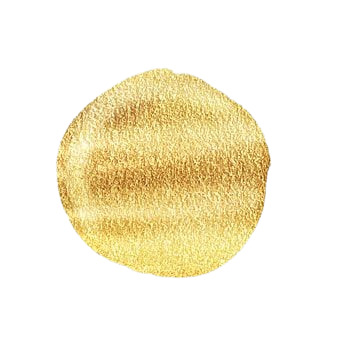

LET'S EXPLORE THE
TEMPLES OF TRIPURA
JDedication to Lord Jagannath: The temple is dedicated to Lord Jagannath, a revered deity in Hinduism, who is worshiped alongside his siblings, Lord Balabhadra (Balarama) and Goddess Subhadra.
Cultural and Religious Unity: The Jagannath Temple in Tripura reflects the cultural and religious influence of the Jagannath tradition originating from Odisha, particularly the famous Jagannath Temple in Puri.
Temple Structure: The main shrine or sanctum sanctorum (garbha griha) houses the idols of Lord Jagannath, along with his siblings Lord Balabhadra and Goddess Subhadra.
Entrance and Gopuram: The entrance to the temple is marked by a gopuram (gateway tower), which serves as an architectural highlight. The gopuram may be adorned with intricate carvings and sculptures depicting scenes from Hindu mythology.
Prasadam Distribution: The food offerings made to Lord Jagannath are known as Mahaprasad. After being offered to the deity, the food is considered sanctified and is distributed among devotees.
Offerings to the Deity: Food is offered to Lord Jagannath several times a day, starting from the early morning until late in the evening. Each offering is accompanied by specific rituals and prayers.